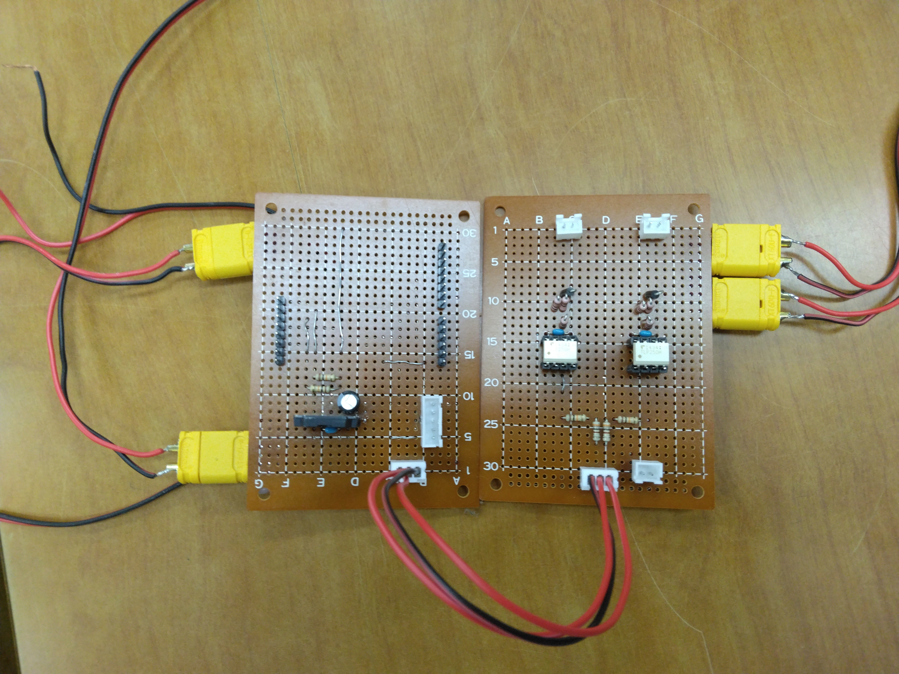
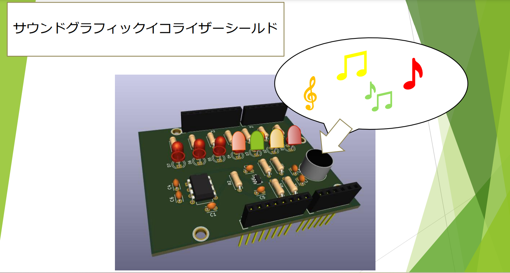

SHOHI'S PORTFOLIO
樋上 翔陽（ひがみ しょうひ）
- 職業：高専4年生
- 年齢：18歳（12/21時点）
- 誕生日：1/18
- 得意分野：回路、電気系
- 機械
- 工作機械：旋盤、ボール盤（半年、学校授業レベル）
- 設計ソフト：Creo（2年、学校授業レベル）
- 電気
- 回路製造：はんだ付け（4年）
- 設計ソフト：kicad（4年、学校授業レベル+独学）
- プログラム
- プログラム言語：Arduino言語（3年、学校授業レベル）、python言語（半年、学校授業レベル）
FOUNDATION FOR RESEARCH ACTIVITIES(基礎研究)
- 研究の概要
基礎研究は、高専4年生のカリキュラムの一環で、4月から11月までの約半年間、ものづくりに取り組むプロジェクトです。
11月には高専祭で、基礎研究で作成した成果物を展示・発表します。
私たちのテーマは、回転寿司店のシステムをメカトロニクスの技術でよりよくすることです。
私たちは5人のチームで、寿司をお皿にのせて回転レーンに流すという基本的な動作に加えて、
寿司の認識や注文のシステム、鮮度の管理、破棄の自動化などを自分たちで考えて実現します。
- 成果物
上の動画が完成したものです。
私が担当したのは回路とお皿を回転レーンから破棄するプログラムです。

作った回路はArduinoのシールド回路とソレノイド駆動回路です。
上の動画はお皿を回転レーンから破棄するプログラムが動いている様子です。
今回は回転レーンを3周したらお皿を破棄するようにしました。
お皿の側面にArucoマーカーを巻き付け読み取ります。3回読み取ったら
お皿を破棄するシリンダーが駆動するプログラムを作りました。
使用言語はpythonです。
- FIRST

上の写真は高専3年生のときの授業で設計したサウンドグラフィックイコライザーシールドです。
- SECOND
上の動画は高専4年生の時にtkinterを用いて作成したゲームです。